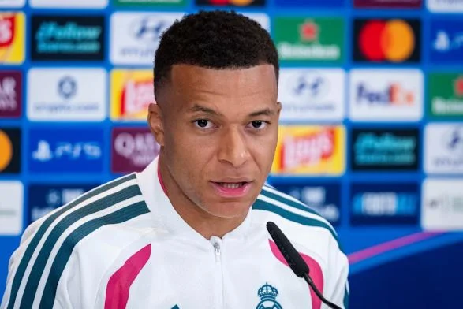

Security & Crime · 02 Nov 2026
Chinese state TV snubs Madrid match despite Mbappé apology

China’s state broadcaster CCTV has refused to air a Real Madrid match despite an apology from French striker Kylian Mbappé over his controversial remarks about the late Chinese leader Mao Zedong, according to the BBC on Monday. The decision came on Sunday as Real Madrid faced Racing Santander
Multiple independent publishers are reporting on the same development: Chinese state TV snubs Madrid match despite Mbappé apology.
The available reports place the development in the Security & Crime category. The accounts were compared for agreement on the central event rather than simply shared names or broad topics.
One of the available reports describes the development this way: China’s state broadcaster CCTV has refused to air a Real Madrid match despite an apology from French striker Kylian Mbappé over his controversial remarks about the late Chinese leader Mao Zedong, according to the BBC on Monday. The decision came on Sunday as Real Madrid faced Racing Santander in a La Liga fixture, which they Read More: https://punchng.com/chinese-state-tv-snubs-madrid-match-despite-mbappe-apology/
Readers should consult the linked source reports for additional context, updates and details that may change as the story develops.
Sources
This article was produced by the C. O. Eric AI Newsroom from the cited sources. It is published only after automated evidence and safety checks.